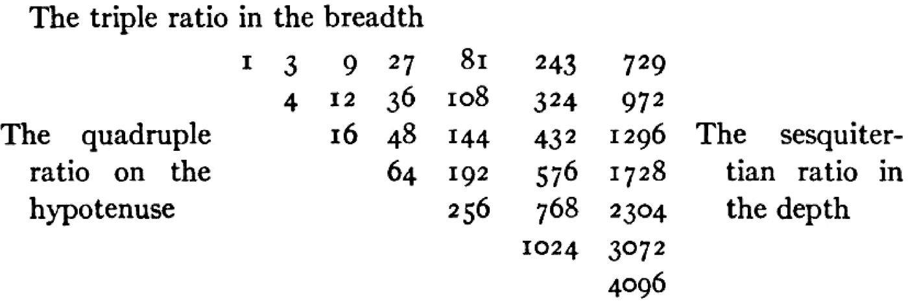

Chapter 4: Triple Ratio Diagram and Natural Order of Multiples¶


1. We ought to draw a like illustration for the triple:
1 |
3 |
9 |
27 |
81 |
243 |
729 |
4 |
12 |
36 |
108 |
324 |
972 |
|
16 |
48 |
144 |
432 |
1296 |
||
64 |
192 |
576 |
1728 |
|||
256 |
768 |
2304 |
||||
1024 |
3072 |
|||||
4096 |
Here in the same way we shall observe the first term, \(3\), leading only one sesquitertian ratio, namely \(4\) to it, which immediately bars the birth of another like ratio; for \(4\) admits no third part and therefore will have no sesquitertian either. The second triple is \(9\); hence it will originate only two sesquitertian ratios, \(12\) to itself and \(16\) to \(12\), and \(16\) then cuts off further advance, since it admits no third part and therefore holds no sesquitertian within it. Next stands the triple \(27\) in the third place from unity as triples advance—\(1, 3, 9, 27\)— and for this reason it too will originate three sesquitertian ratios only, and by no means more: first \(36\) to it, second \(48\) to \(36\), and third \(64\) to \(48\), which no longer has a third part and so admits no sesquitertian; and the fourth is leader of four ratios, and the fifth plainly of five.
2. Let your method of constructing diagrams for all the remaining multiples be the same, while you observe that here too Nature—just as we found in our earlier remarks—displays doubles to us as prior to triples, triples to quadruples, quadruples to quintuples, and so always forever. 3. For if the topmost rows along the breadth are doubles, the rows lying parallel beneath them will likewise be doubles, while the diagonal hypotenuses, when examined side by side, will exhibit the adjacent species of the same genus greater by one—namely triples. If the rows along the breadth are triples, the diagonals will necessarily be quadruples; if those are quadruples, these are straightway quintuples; and so it holds always.